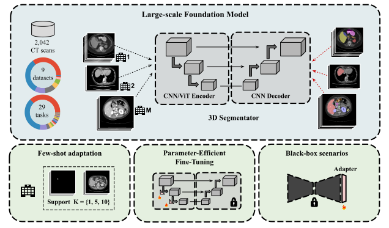
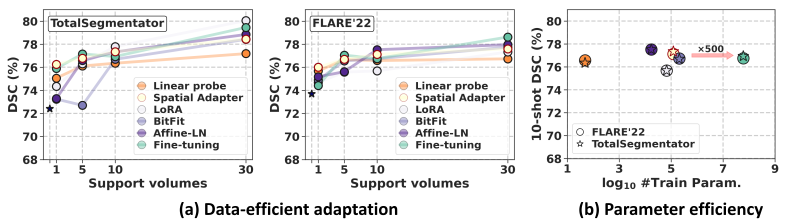
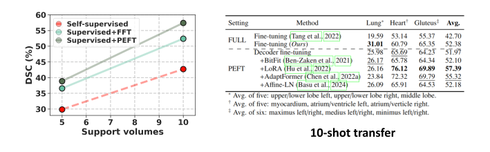

Towards Foundation Models and Few-Shot Parameter-Efficient Fine-Tuning for
Volumetric Organ Segmentation
Medical Image Analysis 2025 -
Paper -
Code
🏅 Best Paper Award at 1st MICCAI Workshop on Foundation Models (MedAGI'23)

Highlights
- A foundation model for volumetric organ segmentation is released, trained on nine publicly available datasets gathering 2,042 CT scans
and 29 annotated structures via supervised pre-training.
- We formalize Few-Shot Efficient Fine-Tuning (FSEFT), a novel and realistic setting for transferring supervised pretrained 3D models in challenging
clinical scenarios. FSEFT considers the scarcity of adaptation supervision, using only a handful of labeled samples in the target task, and the
parameter efficiency.
- Comprehensive transferability experiments point out to the potential of foundation models in low data regimes:
- For segmenting known categories (available during pre-training), use Black-box Adapters for low-resource adaptation.
- For new structures, PEFT combined with supervised pre-training offers impressive performance gains.
Towards transfer learning with commodity resources.
Volumetric organ segmentation addresses a set of biologically finite target objectives. With progressive advancements on open-access data gathering and annotation,
future foundation models will be pre-trained on an increasing number of annotated concepts. A natural transfer learning scenario to exploit foundation models
arises when domain drifts exist in the target institution acquisition systems and demographics, but the pre-trained model has been trained to segment
such organs.
In this work, we advocate for leveraging spatial Adapters, a black-box strategy that operates over pre-computed features - without explicit access to internal
network weights. Such Adapters are indeed a competitive fine-tuning strategy in low data regimes, which allows model adaptation using comodity resources, which are standard
in clinical institutions.

Are foundation models useful for segmenting novel structures?
A desirable quality of transfer learning is to leverage the learned universal representations in new concepts. In particular, we argue that such a property
is of interest if the foundation model requires a small number of examples for adaptation. For volumetric segmentation, we find a need to update the
network decoder, which burdens the parameter-efficient adaptation.
We discover that combining PEFT (LoRA, in particular), with decoder fine-tuning of
supervised pre-trained networks offers strong transferability in the low data regime. This is specially the case when compared to popular self-supervised
pre-training objectives.

Citation
Please cite our paper if it is helpful to your work:
@article{FSEFT,
title={Towards Foundation Models and Few-Shot Parameter-Efficient Fine-Tuning for Volumetric Organ Segmentation},
author={Julio Silva-Rodríguez and Jose Dolz and Ismail {Ben Ayed}},
journal={Medical Image Analysis},
year={2025}
}
Please feel free to contact us: julio-jose.silva-rodriguez@etsmtl.ca.